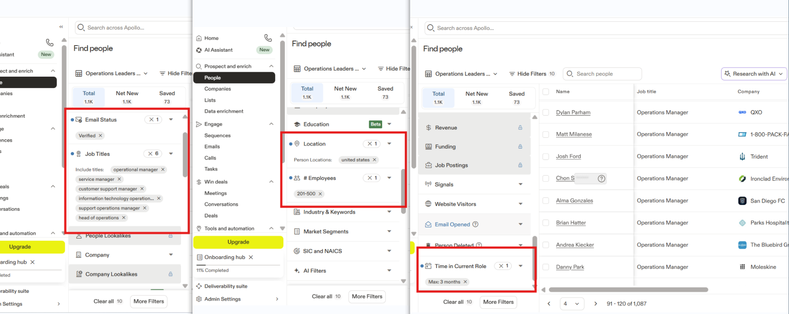
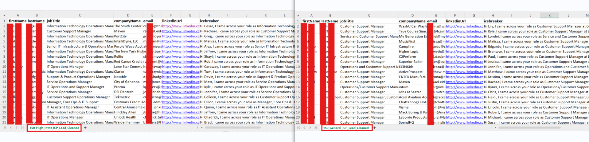
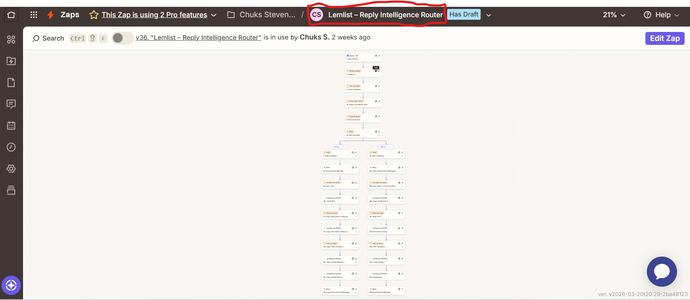

AI Lead Qualification Automation
This evidence page documents the architecture and operational workflow of the AI-assisted outbound sales automation system developed for this project.
The system demonstrates how outbound campaigns can be combined with workflow automation and AI-assisted lead qualification to reduce manual review and improve sales response time.
Workflow Evidence & System Walkthrough
The following screenshots illustrate how leads move through the system from prospect sourcing to outreach, reply detection, AI classification, and pipeline routing.
1. Prospect Sourcing – Apollo
Target prospects were sourced using Apollo based on operational leadership roles such as service managers and operations managers.

Figure: Prospect sourcing using Apollo lead intelligence.
2. Lead Dataset Preparation
After exporting contacts from Apollo, the dataset was reviewed and cleaned before being used for the outreach campaign.
Cleaning steps included removing incomplete records and organizing contact information for campaign upload.

Figure: Cleaned dataset prepared for outreach campaign upload.
3. Lemlist Outreach Campaign
The outbound campaign was launched using Lemlist with a structured email sequence.
The sequence includes:
- Initial outreach message
- Follow-up message - 3days later if no reply after "initial outreach message"
- Break-up message if no response is received - 4days later after if no replay after "follow-up message
Note: campaign automatically stops for each lead when the lead replies.

Figure: Lemlist campaign sequence used for the outreach workflow.
4. Automation Workflow – Zapier
When a prospect replies to the outreach email, Zapier detects the reply event and triggers the automation workflow responsible for reply analysis and lead qualification.

Figure: Zapier workflow used for reply detection and automation.
5. Reply Detection Notification
Whenever a reply is received, the system generates an alert indicating that a prospect has responded to the outreach message.
This notification serves as the starting point for the AI-assisted lead qualification process.

Figure: Example notification triggered when a prospect replies to the campaign.
6. Lead Registration in Pipeline
After classification, qualified leads are automatically created and organized inside the sales pipeline workspace.
This allows the team to track and prioritize leads according to their qualification level.

Figure: Qualified leads automatically registered in the pipeline workspace.
7. SLA Monitoring & Escalation Alerts
To ensure timely follow-up, the system monitors response deadlines for newly created leads.
If a lead is not contacted within the defined response window, escalation alerts are generated to notify internal stakeholders.
This escalation system helps maintain accountability and ensures that high-priority opportunities receive prompt attention.

Figure: Escalation notification triggered when the response SLA is exceeded.
System Summary
This project demonstrates how outbound campaigns, automation workflows, and AI-assisted classification can be combined to streamline sales operations.
By automating reply detection, lead qualification, and pipeline routing, the system reduces manual workload while ensuring that high-intent prospects receive immediate attention.
The workflow showcases how automation can support scalable outbound operations while maintaining responsiveness and accountability.
← Back to Project Documentation